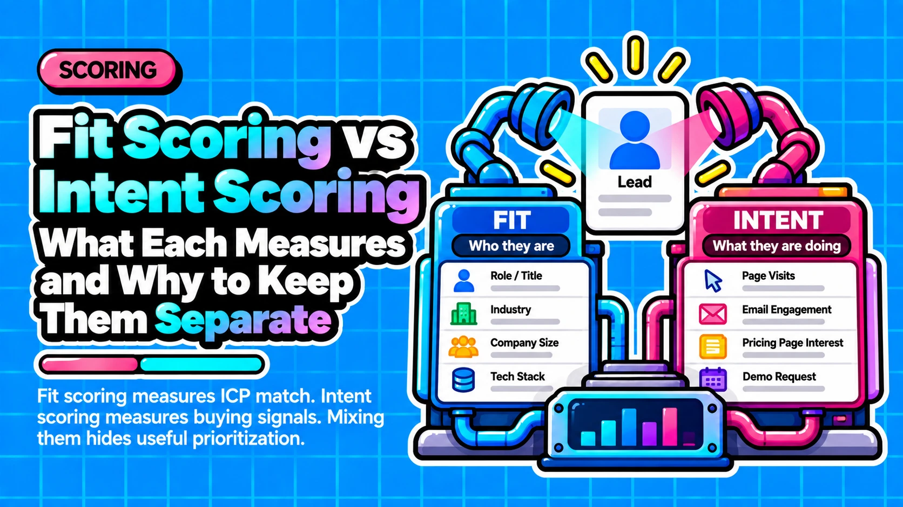

Fit Scoring vs Intent Scoring: What Each Measures and Why to Keep Them Separate

Direct answer: Fit scoring measures how closely a lead or account matches the ideal customer profile, using slow-changing firmographic, demographic and technographic attributes. Intent scoring measures how actively that lead is showing buying interest now, using perishable behavioral signals that should decay. Fit is the "who" and intent is the "when." Platforms name the pair differently, but the separation matters regardless of tool.
- Fit answers who: It compares a lead or account to your ICP using attributes that change slowly, so it should be re-scored on data change, not on a time curve.
- Intent answers when: It reads recent behavior, so it needs weights and decay, and its inputs differ widely in reliability.
- Two scores beat one: A single summed number hides which dimension drove the result; we recommend separate fields combined through a matrix or gate.
- Fit gates sales attention: High intent from a poor-fit lead should be qualified or redirected, not routed straight to sales.
- Every cell needs an owner: Each fit and intent combination should define an action, an owner and a lifecycle change.
Questions this article answers
- What is the difference between fit and intent scoring, and what do platforms call them?
- What goes into a fit score and what goes into an intent score?
- How do fit and intent scoring compare side by side?
- Why does one blended score fail, and when is a combined score fine?
- What should each cell of a fit × intent matrix trigger?
- How do you calibrate thresholds, and when is predictive scoring warranted?
- Plus 5 FAQs answered below
What is the difference between fit and intent scoring, and what do platforms call them?
Fit asks whether this is the right kind of buyer, intent asks whether that buyer is active now, and platforms name the same split differently.
Fit scoring measures how closely a lead or account matches the ideal customer profile using attributes such as industry, company size, job title, location and tech stack. Intent scoring measures what a lead does: page views, form submissions, email clicks, demo requests, meetings and pricing-page visits (HubSpot). The first question is about identity. The second is about timing.
| Platform | Fit-side name | Intent-side name |
|---|---|---|
| HubSpot | Fit score | Engagement score |
| Salesforce Account Engagement | Grade (letters A to F) | Score (activity-based) |
| Marketo practice | Demographic score | Behavior score |
| MadKudu | Customer Fit | Likelihood to Buy |
| Clearbit | Fit | Intent |
| 6sense | Account profile fit | Intent and buying stage |
Terminology is not standardized, and intent and engagement are not identical. First-party intent is behavior on your own properties; third-party intent is aggregated off-site research (ZoomInfo). From here on we use "fit," "intent (engagement)" for behavior on your own properties, and "third-party intent" when we mean off-site research.
What goes into a fit score and what goes into an intent score?
Fit uses attributes of who the buyer is, while intent uses signals of what the buyer is doing, either on your own properties or from third-party research.
Separating inputs by source keeps each score interpretable. Fit inputs describe the company and the person, change rarely and live in CRM or enrichment data. Intent inputs describe behavior, change constantly and vary in reliability depending on where they were captured. Mixing both in one rule list makes it hard to tell whether a score reflects who the buyer is or what the buyer did recently. We recommend assigning an owner and a refresh logic to each input group before assigning any weight.
Firmographic: industry, company size, location.
Demographic: job title and role.
Technographic: the tech stack the company uses.
Negative criteria: job seekers, students, competitors, existing customers and excluded regions. Treat these as a separate disqualification layer so they never look sales-ready (Automation Strategists).
Engagement: content views, form fills and email clicks on your own properties.
High-intent first-party actions: demo requests, pricing-page visits and meetings. Weight these above generic content views.
Third-party intent: aggregated off-site research, usually at account level, so it still needs a fit score to qualify the account.
Signal reliability matters inside intent. Mailchimp states that with Apple Mail Privacy Protection enabled, Apple Mail preloads tracking pixels even if the email was not opened, so open metrics are unreliable, while click activity is still reported (Mailchimp). Consider a hypothetical lead who opens many emails but never clicks or visits the pricing page. After Mail Privacy Protection, those opens may be automated preloads, making this a weak intent profile. Clicks, replies, meetings and key-page visits are stronger.
How do fit and intent scoring compare side by side?
Fit and intent differ in question answered, inputs, stability, decay, failure mode and routing role: fit is a stable qualifier, intent a perishable timing signal.
Fit changes when firmographic or enrichment data changes: a company's headcount is updated or a contact changes title. We re-score fit on data change, not on a time curve, and practitioner sources warn that building recency into fit turns it into a confused composite (Checkpoint GTM, Artemis GTM). Intent works the opposite way: behavior loses meaning as it ages, so it needs weights and decay.
| Attribute | Fit score | Intent score |
|---|---|---|
| Question answered | Is this the right kind of buyer? | Is this buyer active now? |
| Name and aliases | Fit, grade, demographic score, Customer Fit | Intent, engagement, score, behavior score, Likelihood to Buy |
| Time behavior | Stable; re-score when data changes | Perishable; decays as events age |
| Data source | CRM and enrichment attributes | Web, form, email-click and meeting events; third-party feeds |
| Key limitation | Misses high-intent buyers outside the stated ICP | Floods sales with unqualified browsers if used alone |
| Routing role | Gate for sales attention | Timing trigger |
| Decay applies? | No (HubSpot: decay does not apply to fit criteria) | Yes (MadKudu: last 90 days, weighted, decayed) |
Our recommendation is to store them separately, re-score fit on data change, decay only intent, and use fit for "who" and intent for "when." The key-limitation row reflects practitioner analysis that Artemis GTM presents as directional, not a controlled study.
Why does one blended score fail, and when is a combined score fine?
A summed number hides which dimension drove it, so a poor-fit lead with heavy activity can match a good-fit lead with little activity; the problem is lost information, not summation itself.
The mechanism is arithmetic, not tooling. Behaviors compound: every visit, click and form fill can add points, while firmographic attributes are a small fixed set that tops out quickly. Intent points therefore accumulate faster than fit points, and a long activity trail can outweigh a poor match. Clearbit quotes a MadKudu example in which a combined letter grade hides a very active but poorly fitting lead (Clearbit).
Consider a hypothetical pair. Lead A works at a well-matched company and downloaded one guide. Lead B is a poor-fit contact who requested a demo. A summed score can treat them alike, yet the right actions differ: nurture Lead A, and qualify Lead B before sales spends time.
Four ways to combine the scores, with the trade-off of each:
- Two separate fields: the simplest and most explainable option, but routing needs a rule that reads both. Clearbit describes a letter for fit and a number for intent, so the fit letter stays stable while intent moves.
- Matrix lookup: maps each fit band and intent band to an action, but requires defined bands for both scores.
- Gate or cap intent behind a fit floor: stops activity from outranking fit, but requires you to choose the floor.
- Multiplying fit by intent: argued to avoid additive masking, though this is a practitioner argument rather than a tested result.
A combined total is acceptable when fit, behavior and qualification reason stay stored separately. HubSpot's combined score does this by creating three properties: total, engagement-only and fit-only (HubSpot).
What should each cell of a fit × intent matrix trigger?
High fit with high intent routes to sales, high fit with low intent is nurtured, low fit with high intent is lightly qualified, and low fit with low intent is suppressed.
The matrix works because the two scores play different roles. Fit decides who deserves sales attention, and intent decides when that attention should arrive. Clearbit's guidance makes fit the main gatekeeper, because high-intent companies with an "okay" fit are tempting low-hanging fruit (Clearbit). HubSpot documents a built-in version: a nine-label grid from A1 to C3, where the letter is fit, the number is engagement, and a low-fit, highly engaged contact is C1 (HubSpot).
| Cell | Action | Owner | Lifecycle effect |
|---|---|---|---|
| High fit, high intent | Route to sales quickly | SDR | Move to sales-ready stage |
| High fit, low intent | Nurture or ABM until intent appears | Marketing | Stay in marketing-owned stage |
| Low fit, high intent | Light qualification, self-serve or partner redirect | Marketing or self-serve | Hold below sales-ready; review ICP |
| Low fit, low intent | Suppress or low-touch only | Marketing ops | Remain in a low-priority state |
Low fit with high intent is not an automatic discard. Treatment follows the motions you actually have: Clearbit's example sends enterprise leads to sales and high-intent SMB leads to self-serve, and in our view a steady flow of high-intent, low-fit leads is worth checking against your ICP definition. Negative criteria such as students, competitors and existing customers belong in a separate disqualification step ahead of the matrix (Automation Strategists). Every cell should name a lifecycle change, an owner and an SLA, with durations set from your own team capacity.
How do you calibrate thresholds, and when is predictive scoring warranted?
Set thresholds against historical opportunity and win outcomes and review them on a regular cadence; a rules-based matrix is a practical baseline before predictive scoring.
We recommend calibrating the fit floor and the intent trigger against closed outcomes, such as opportunities created and deals won, rather than intuition. Sources recommend quarterly or every-90-day reviews, which is practitioner convention, not a benchmark from controlled research (Pedowitz Group). We give no numeric cutoffs because they depend on your own data.
Design rules checklist:
- ☐ Store Fit Score, Intent Score and Qualification Reason as separate fields.
- ☐ Apply decay only to intent, never to fit.
- ☐ Re-score fit when enrichment data changes, and record a Last Fit Refresh Date.
- ☐ Gate or cap intent behind a fit floor before it triggers sales routing.
- ☐ Define an action, owner, SLA and lifecycle effect for every matrix cell.
- ☐ Set thresholds from closed outcomes and review them on a fixed cadence.
MadKudu's predictive scoring keeps the separation. Its Customer Fit model uses only firmographic, demographic and technographic data, its Likelihood to Buy score sums activity from the last 90 days with weights and decay, and its Lead Grade is a matrix combining the two (MadKudu, MadKudu Likelihood to Buy). Minimum-data figures for predictive scoring circulate in secondary sources but are unverified, so check the vendor's documentation before committing.
Frequently asked questions
Should fit scores decay over time?
No. Fit does not need a time-decay curve. Re-evaluate it when firmographic or enrichment data changes, such as a new job title or company size. Decay belongs to intent. HubSpot applies decay to engagement and combined event groups, not to fit criteria, and practitioners warn that building recency into fit creates a confused composite (Checkpoint GTM).
Can I keep one total score and still separate fit and intent?
Yes, if the component scores and the qualification reason are stored as separate fields. HubSpot's combined score works this way: it creates a total plus engagement-only and fit-only properties (HubSpot). The risk is information loss, not the total itself, so keep the components available for routing and analysis.
What should I do with a low-fit, high-intent lead?
Do not auto-discard it. Qualify the lead lightly, route it to self-serve or a partner if those motions exist, or check whether your ICP definition is wrong. Hold it back from sales by default, since Clearbit's guidance makes fit, not intent, the main gatekeeper for sales attention.
Are email opens a reliable intent signal?
No. Mailchimp states that with Apple Mail Privacy Protection enabled, Apple Mail preloads tracking pixels even when the email was not opened, so open metrics are unreliable, while click activity is still reported (Mailchimp). We treat opens as a weak input and weight clicks, replies, meetings and key-page visits higher.
Does third-party intent data replace lead scoring?
No. Third-party intent is aggregated off-site research, usually at account level (ZoomInfo). It offers earlier and broader reach at lower precision, so it works as one input on the intent side, alongside a fit score that says whether the account matches the ICP.
Sources
- Overview of the lead scoring tool, HubSpot Knowledge Base
- Account Engagement Glossary, Salesforce Help
- Lead Scoring and Grading for Sales Wins with Pardot, Salesforce
- Introduction to MadKudu, MadKudu Support
- How is the Likelihood to Buy score calculated?, MadKudu Help
- Modern Guide to Lead Qualification: Lead scoring basics, Clearbit
- How 6sense Turns Buying Signals into Account Priorities, 6sense
- Marketo Lead Scoring: An Overview, 4Thought Marketing
- 10 HubSpot Lead Scoring Best Practices for 2026, Automation Strategists
- HubSpot lead scoring: fit vs. engagement, why one score never works, Checkpoint GTM
- How to Implement Lead Scoring: The Fit + Intent Model, Artemis GTM
- Apple Mail Privacy Protection (MPP) FAQs, Mailchimp
- Intent Data for Sales: The Complete 2026 Guide, ZoomInfo Pipeline
- What are the different types of lead scoring models?, The Pedowitz Group
Want fit and intent scoring built into your own CRM?
Contact →